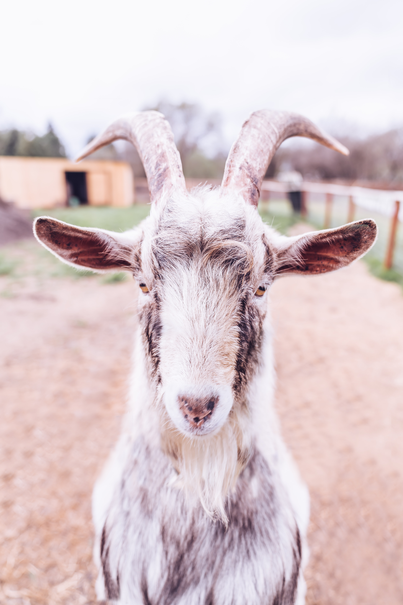
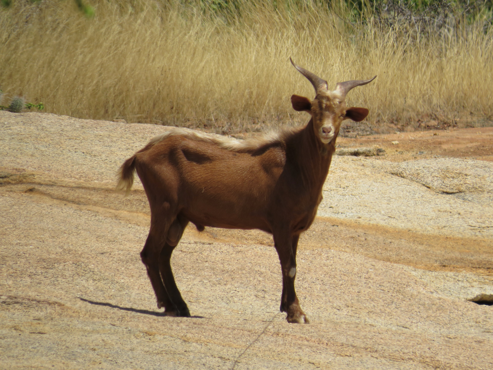
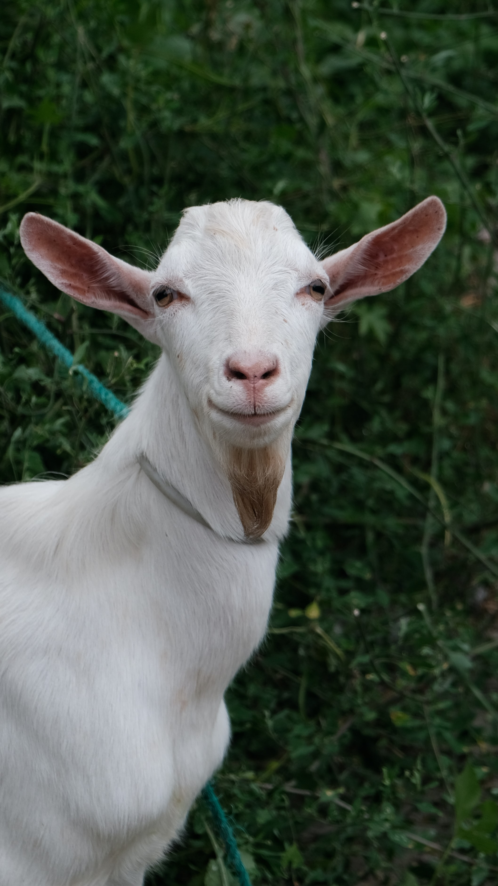
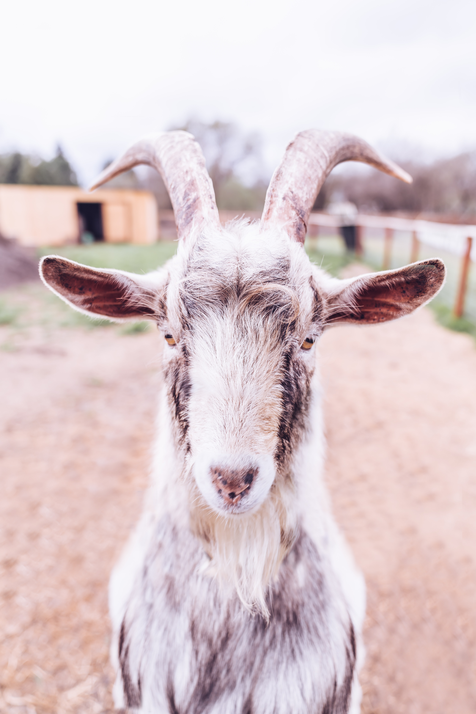
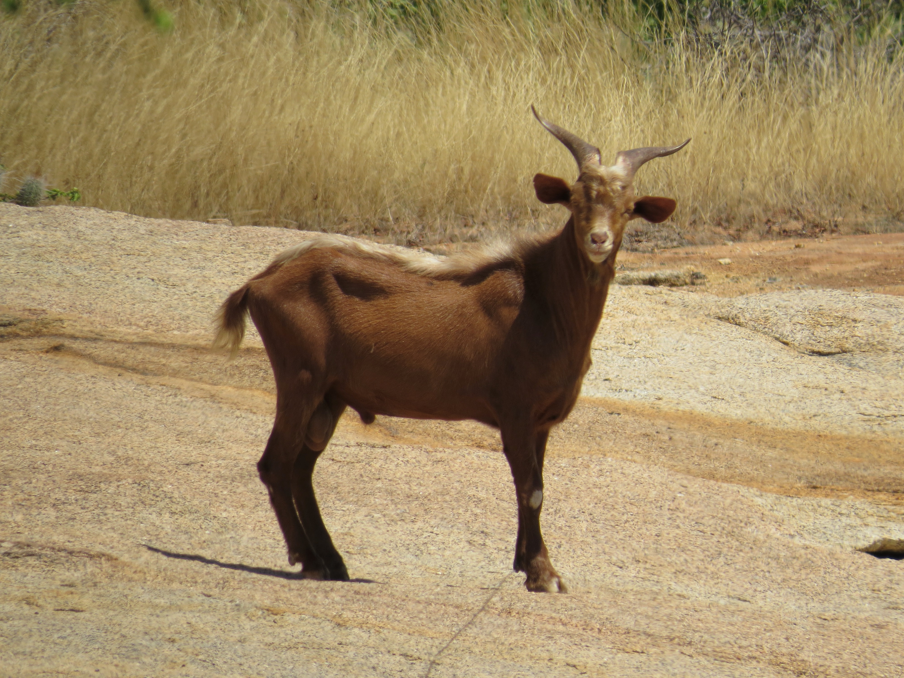
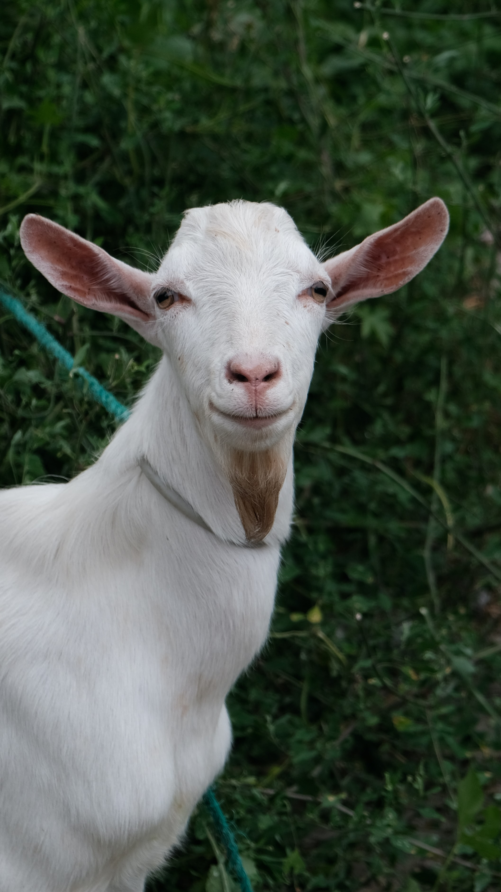
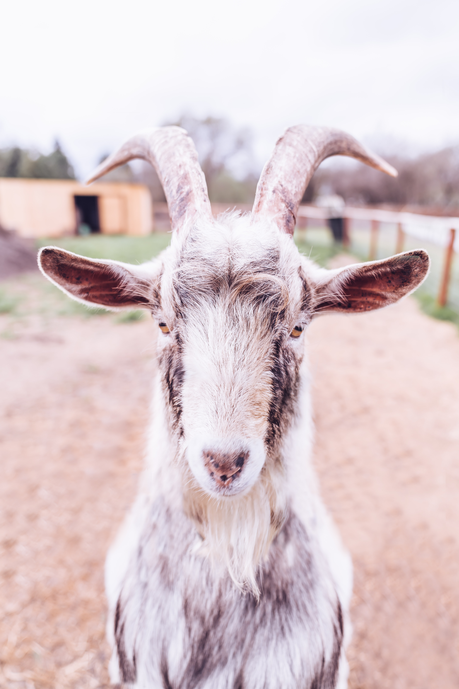
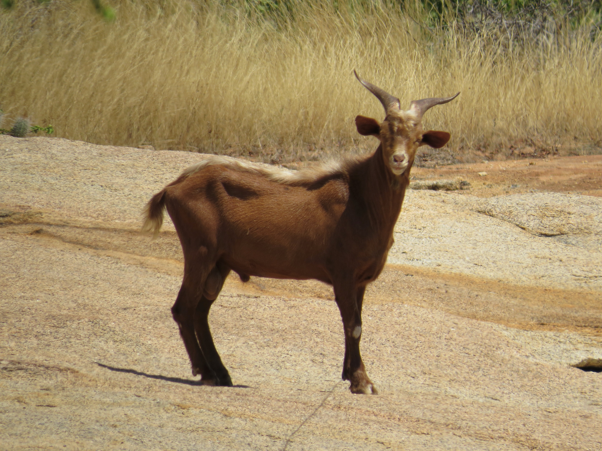
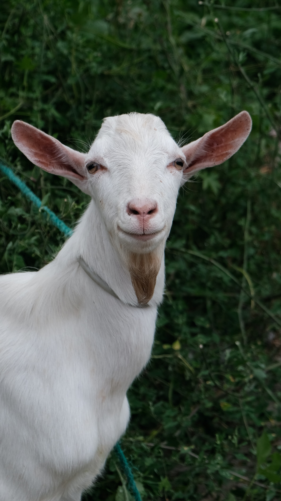
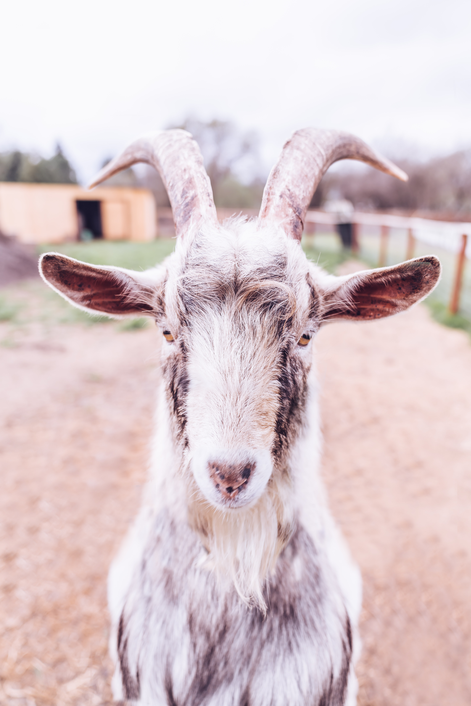
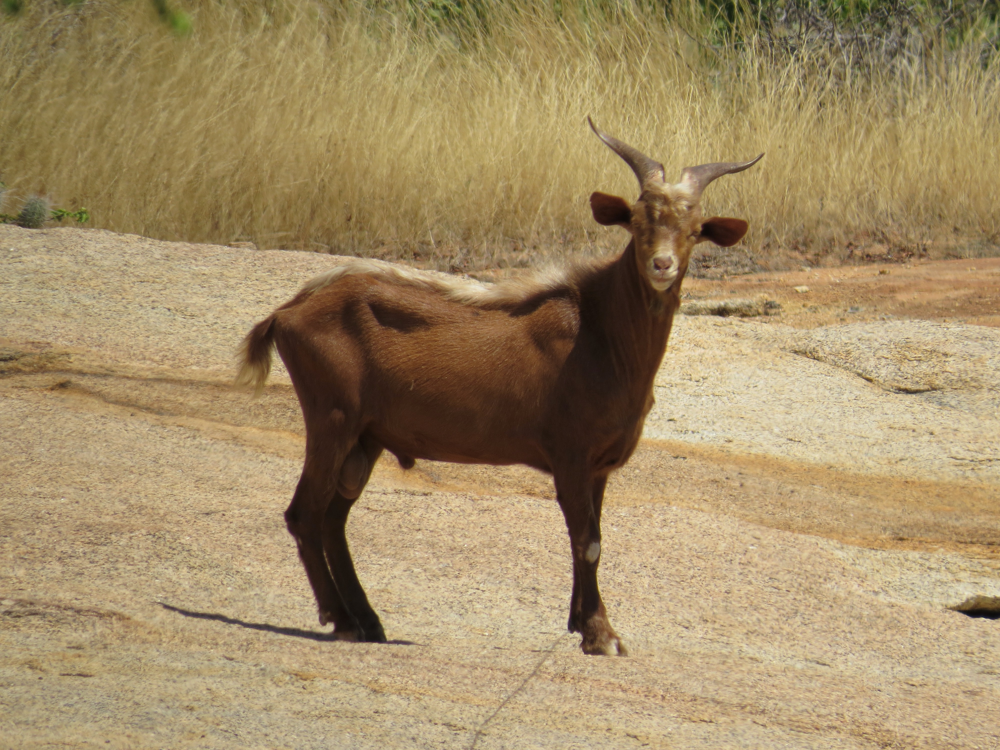
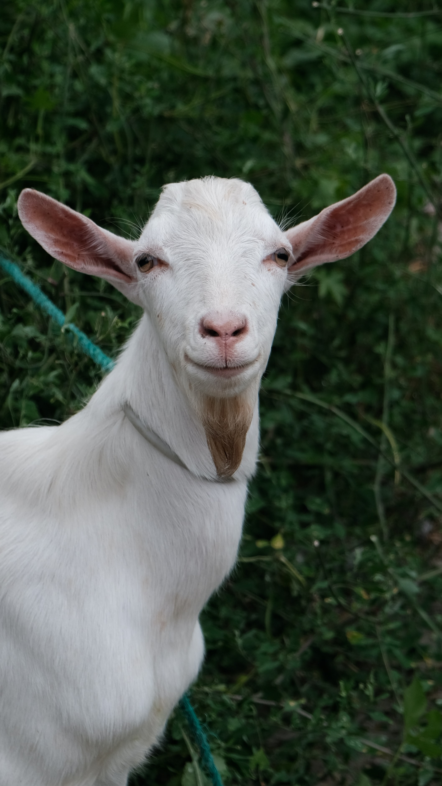
Goats are very useful animals. Goats are among the earliest animals domesticated by humans. They have a four-chambered stomach consisting of the rumen, the reticulum, the omasum, and the abomasum. They have horizontal slit-shaped pupils, an adaptation which increases peripheral depth perception. Their tails are short and point upwards.